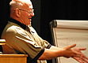
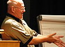

Terms and Conditions
Leading a session
Fees/Payment
Those leading a session (provided they were the first or second named presenter) will qualify for free attendance at the conference. Session leaders are encouraged to attend the whole conference given the highly interactive nature of the event.
Joint/multiple proposals
While potential session leaders are invited to submit as many proposals as they wish, they should be aware that we will limit the number of proposals accepted from an individual or group in the interest of maintaining a balanced programme.
If a session has more than two leaders, then only the first two named leaders will qualify for a free place. Conditions of inclusion in programme
- Final acceptance of proposal will be at the complete discretion of the Programme Chair.
- By agreeing to have the session included in the programme the session leader is committing to:
- Participate in the shepherding process to ensure high session quality
- Supply all materials relating to the session by 16th May 2011
- The session leader grants the SPA Specialist Group the right to reproduce and distribute (in printed, on-line and CD formats) all materials submitted for the session. The copyright of the materials remains with the original copyright holder. Where copyright is held by a person other than the session leader, it is the session leaders responsibility to ensure appropriate permission to use is secured.
- In the unlikely event that Programme Chair, at their absolute discretion, decides that the session leader has not complied with these terms and conditions, they may remove the session from the Programme. The session leader may no longer then be eligible for reduced rate participation in the conference and thus will be given the option of either a refund of any fees paid or the option to pay the additional fees necessary to allow them to continue to participate.
Data Policies
Conference participants and others registered with this website are advised that information they provide will be held on computer databases for administrative purposes. Summary information, including contact data, will be published on the SPA Conference website for all session leaders. Other participants may opt-out of having this information published. Information about participants (but not other registered users of this website) will be made available to other organisations involved in organising the conference. The SPA Specialist Group will use the contact information given by users of the website to contact them regarding SPA Specialist Group events including future conferences. Users can request that their data is not used for direct marketing purposes by either the SPA Specialist Group or third parties by contacting
Other
The SPA Specialist Group is not responsible for the views or opinions expressed by individual session leaders, contributors to the SPA wiki, or any individuals who are not members of the executive committee.